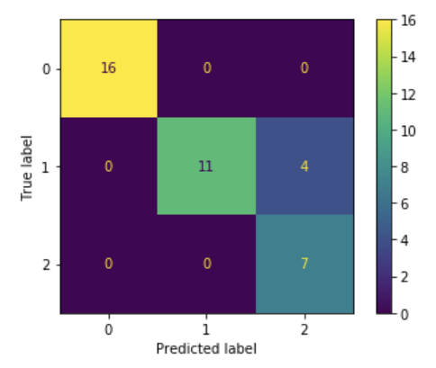

class: center, middle ## Machine learning with scikit-learn Pierre Ablin .affiliations[  ] --- # What should we do to train a model ? - We are provided a $n \times p$ matrix $\mathbf{X}$ with n samples with p features - With labels $y \in \mathbb{R}^n$: $n$ associated labels (in a supervised setting) 1. Split the data to retain a *test set* 2. Fit a certain estimator to the training data 3. Evaluate the estimator on the test data --- # Splitting the data into a train/validation set - Evaluate a certain model $f\_{\theta}$ over new data - Split $\mathbf{X}$, $\mathbf{y}$ into training and evaluation examples $$(\mathbf{X}\_{train}, \mathbf{y}\_{train}), (\mathbf{X}\_{test}, \mathbf{y}\_{test})$$ - Learn $\theta$ with $(\mathbf{X}\_{train}, \mathbf{y}\_{train})$, evaluate it on $(\mathbf{X}\_{test}, \mathbf{y}\_{test})$ --- # Fitting the data and evaluating prediction - Define $f_\theta$ with various hyperparameters (**Instantiate**) - Learn $\hat \theta$ with $(\mathbf{X}\_{train}, \mathbf{y}\_{train})$ (**Fit**) - $\hat y\_{test} = f\_{\hat \theta}(X\_{test})$ (**Predict**) - Compare $\hat y\_{test}$ and $y\_{test}$ (**Score**) - Select the model $f$ with the best generalization (**Model selection**) Scikit-learn provides the API to do it easily --- # How to implement it ```python from sklearn.datasets import load_iris from sklearn.model_selection import train_test_split from sklearn.svm import LinearSVC from sklearn.metrics import accuracy_score iris = load_iris() X, y = iris['data'], iris['target'] # type: np.ndarray estimator = LinearSVC(C=1.0) # provide optional parameter here X_train, X_test, y_train, y_test = train_test_split(X, y) estimator.fit(X_train, y_train) # change the internals of the estimator (theta) y_pred = estimator.predict(X_test) accuracy = accuracy_score(y_test, y_pred) # Evaluate the misclassification ``` --- # Loading data ```python from sklearn.datasets import load_iris iris = load_iris() X, y = iris['data'], iris['target'] # type: np.ndarray ``` Scikit-learn allows to access many *benchmark datasets* - `load_XXX` loads toy datasets published with the library - `fetch_XXX` downloads bigger dataset from the internet - Create your own ! We want to have $X$ and $y$ numeric matrices, i.e. `numpy.array` - `scikit-learn` provides `Transformer` for this (studied later) --- # Splitting data ```python from sklearn.model_selection import train_test_split X_train, X_test, y_train, y_test = train_test_split(X, y) ``` - Utilities to separate training and validation data - Other utilities to do it repeatedly: `KFoldSplit`, `ShuffleSplit` - Stratify according to a group (as many male/female in the train/test groups) --- # Defining an estimator ```python from sklearn.svm import LinearSVC estimator = LinearSVC(C=1.0) ``` Many different models (see documentation) - Classification (multi-class/binary) - Regularization - Multi-target (several targets to predict) In particular: - All linear models (`Ridge`, `SVM`, `LogisticRegression`) - Neural-network (Multi-layer perceptron `MLPClassifier`/`MLPRegressor`) --- # Defining an estimator ```python from sklearn.svm import LinearSVC estimator = LinearSVC(C=1.0) ``` Many hyper-parameters, that changes - The model (example: `width`/`depth` for neural-networks) - The function comparing `y_pred` and `y_true` - The regularization over parameters - The method used to fit the model --- # Fitting an estimator ```python estimator.fit(X_train, y_train) ``` The `estimator` is a stateful `Python` object. The fitted parameter $\hat \theta$ is stored as attributes ```python estimator.intercept_, estimator.weight_ ``` - Linear: Holds the weight $W$ and bias $b$ of the linear model - For neural-networks: many weights and biases - Those attributes allows to use test-time functions --- # Using an estimator ```python y_pred = estimator.predict(X_test) ``` - Predicts the output: $\hat y = f\_\theta(X\_{\textrm{test}})$ - Linear models: $\hat y = \textrm{argmax}\_{\textrm{class i}} (W x + b)\_i $ - Similar in neural-networks - Majority voting/mean in random forests - When a probabilistic model is available (classifier) ```python y_pred = estimator.predict_proba(X_test) # y_pred.shape = (n_samples, n_classes) ``` --- # Evaluating an estimator ```python from sklearn.metrics import accuracy_score accuracy = accuracy_score(y_test, y_pred) # Evaluate the misclassification ``` .center[  ] - Many metrics in `sklearn.metrics`: - mean squared error, average error for regression - precision and recall for binary classification - F1 score, balanced accuracy for multi-class classification --- # Evaluating an estimator For classification, all metrics derive from the confusion matrix ```python from sklearn.metrics import plot_confusion_matrix plot_confusion_matrix(estimator, X_test, y_test) ``` Estimator can evaluate their performance directly on test data ```python estimator.score(X_test, y_test) ``` with the metric adapted to the estimator. - Often you want to choose the metric yourself ! --- # Choosing your estimator .center[ <img src="images/ml_map.png" style="width: 800px;" /> ]